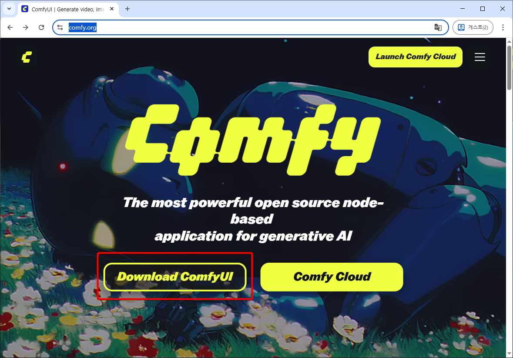
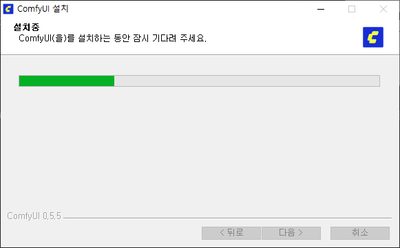

ComfyUI 설치
파일 다운로드

ComfyUI 웹페이지 https://www.comfy.org에 접속한 후, “Download ConmfyUI” 버튼 클릭

“Download for Windows” 클릭, 파일 다운로드
(여기서는 0.5.5) 버전을 기준으로 함.
설치 프로그램 실행

다운로드 받은 파일을 실행한 후 “설치” 버튼을 클릭한다.

comfyUI는 특별한 설정없이 바로 설치할 수 있다.

설치가 완료되었다. 기본 설정되어 있는 “ComfyUI 실행하기” 를 체크된 채로 “마침” 버튼을 누르면 설치 완료와 동시에 ComfyUI가 실행된다.

“Get Started” 버튼을 누른다.

“nVidia CUDA” 옵션을 선택하고 “Next” 버튼을 누른다.

comfyUI가 설치될 경로를 물어보는데 이 경로는 그림과 같이 “C:\comfyui“로 하고 “Next” 버튼을 누른다.

빨간색 표시한 부분은 활용에 관한 정보를 comfyui 측에 익명으로 보낼지 여부이다. 개인 판단에 따라 켜거나 끈다.
“Install” 버튼을 누르면 설치가 실행된다. 이 설치에는 comfyui에서 사용할 python 설치도 포함된다.

설치가 완료되면 다음과 같이 comfyUI가 실행된다.

comfyui 모델 경로 등 폴더 변경
AI 모델은 용량이 상당하기 때문에 C드라이브에 다운로드받아 사용하기 어렵다. 많은 경우 C드라이브는 비싸고 빠른 SSD를 사용하고, D, E 드라이브는 데이터 전용으로 싸고 느린 HDD를 사용하기 때문이다.
이런 경우라면 AI 모델을 다운로드 받는 디렉토리를 D, E 드라이브로 바꾸는 것도 고려해 볼 수 있다. 다음의 방법으로 바꾼다.
우리처럼 desktop 버전을 설치한 경우에는 2가지 설정을 바꿔야 한다.
1. extra_model_paths.yaml 파일 변경
가. extra_model_paths.yaml 파일 열기

위 방법으로 “extra_model_paths.yaml” 파일을 연다.
파일의 내용은 다음과 같다.
# ComfyUI extra_model_paths.yaml for win32
comfyui_desktop:
is_default: "true"
custom_nodes: custom_nodes/
download_model_base: models
base_path: C:\comfyui
desktop_extensions:
custom_nodes: C:\Users\USER\AppData\Local\Programs\ComfyUI\resources\ComfyUI\custom_nodes
여기서 “base_path: C:\comfyui” 부분을 바꿔준다. 이 값은 사람마다 다 다를 수 있다. 중요한 것은 C:\comfyui 위치(이하 A위치라 하겠음)에 있는 것을 우리가 원하는 것으로 바꿔주는 것이다.
가. 파일 복사
바꿔주기 전에 먼저 탐색기를 열어 저 A 위치로 가자. 우리가 할 일은 A 의 내용을 그대로 새로운 폴더(D:\comfyui, 이하 B)로 복사할 거기 때문에 미리 복사해 놔야 원래 값이 뭐였지 하며 고민하는 수고를 하지 않을 수 있다.
그러니 먼저 A 폴더를 복사해 B위치에 가도록 복사해 놓자.
나. extra_model_paths.yaml 파일 변경 마무리
다시 extra_model_paths.yaml로 돌아오자.
여기서는 D:\comfyui로 바꿔주겠다.
base_path: D:\comfyui
위와 같이 D 혹은 E 드라이브로 바꿔준다.
다. comfyui 종료
comfyui를 종료한다.
2. config.json 파일 설정
탐색기에서 %appdata%/comfyui 로 간다. 주소가 조금 이상한데 저대로 복사해서 탐색기 주소 넣는 부분에 넣으면 된다.
그 폴더 안에 config.json 파일이 있다. 혹시 모르니 복사, 붙여넣기를 바로 해서 이 파일의 복사본을 만들어 놓고 (그럼 config.json - 복사본 파일이 만들어진다), config.json 파일을 메모장으로 연다.
{
"installState": "installed",
"detectedGpu": "nvidia",
"basePath": "C:\\comfyui",
"versionConsentedMetrics": "0.5.5",
"selectedDevice": "nvidia",
"hasGeneratedSuccessfully": true
}
위와 같이 되어 있는데 여기서 basePath 부분을 수정한다. B 로 바꾸면 된다. 내 경우엔
"basePath": "D:\\comfyui",
으로 수정했다.
재실행
comfyui를 닫고 다시 실행한다.